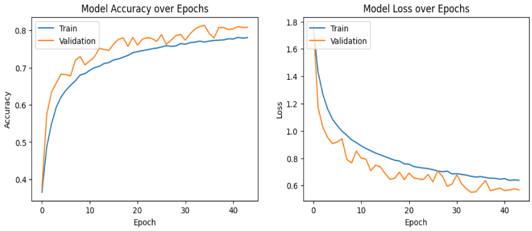
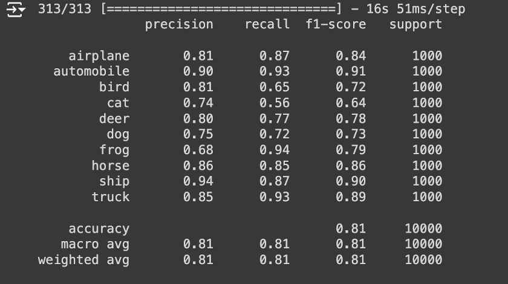
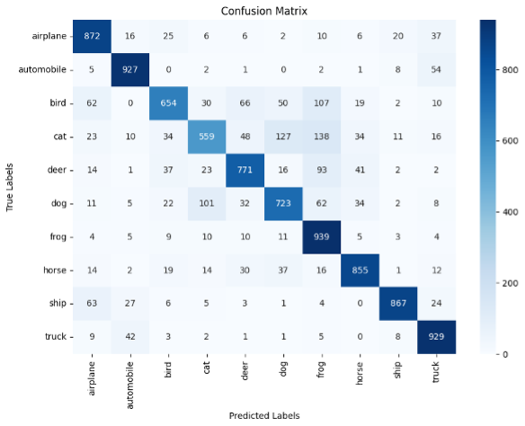

CNN Assignment
The second assignment of this module was an individual assessment and required to train a CNN using the CIFAR-10 dataset. The assignment required that once the model is trained, a presentation is made and recorded on the findings on the project.
Links:
Below is a summary of my implementation and presentation
Dataset Overview
The CIFAR-10 dataset, collected by Alex Krizhevsky, Vinod Nair, and Geoffrey Hinton in 2009, contains 60,000 images each 32x32 pixels in size, represented in three channels (Red, Green, and Blue). It comprises 10 classes, each representing different objects such as airplanes, automobiles, birds, cats, deer, dogs, frogs, horses, ships, and trucks, with each class containing 6000 images.
Data Preprocessing
- Data Splitting: The dataset was divided into training (40,000 images), validation (10,000 images), and test sets (10,000 images). This split allows the model to learn from various features, fine-tune parameters, monitor for overfitting, and provide an unbiased evaluation.
- Normalisation: The pixel values of the images were scaled from 0-255 to a range between 0 and 1. This transformation enhances the neural network's ability to converge more quickly and stably during the training process.
- One-Hot Encoding: The categorical class labels were transformed into a binary matrix format, allowing the use of categorical cross-entropy loss during training, which is effective for multi-class problems.
Model Training
- Artificial Neural Networks (ANNs): ANNs simulate human brains, consisting of input layers, several hidden layers, and an output layer. Data is processed through these layers using adjustable weights to enhance predictive accuracy.
- Convolutional Neural Networks (CNNs) Structure: CNNs take advantage of the spatial hierarchy in images, using layers such as convolutional layers (for feature extraction), pooling layers (for spatial dimension reduction), fully connected layers (for high-level reasoning), and activation functions like ReLU to introduce non-linearity.
- Model 1 Architecture: The model includes multiple Conv2D layers followed by MaxPooling2D layers, a Flatten layer, and Dense layers with Dropout to prevent overfitting. This model was tested over 10 epochs, showing signs of overfitting with training accuracy improving but validation accuracy plateauing.
- Model 2 Architecture: This model increased complexity with multiple convolutional layers and dropout layers, using the RMSprop optimizer and a learning rate schedule. Despite improvements, overfitting persisted, indicated by a gap between training and validation performance.
- Improving Model 2: Strategies employed included batch normalization, data augmentation, early stopping, using the Adam optimizer, and increasing dropout to 0.3. These adjustments aimed to enhance generalization and reduce overfitting.
Model Performance
- Model 3(improved Model 2) Performance: Significant improvements were observed with early stopping at 44 epochs, better stability, and convergence. The model displayed superior handling of overfitting, with closer training and validation accuracy and loss figures, indicating reliable predictions.

Model Evaluation
-
Classification Report: The final model showed outstanding performance in 'automobile' and 'ship' classes with high F1-scores. However, the 'cat' class remained challenging, demonstrating lower recall and F1-score. Overall, the model showed high specificity but varied sensitivity across classes.

-
Confusion Matrix: The confusion matrix revealed strong model accuracy in classes like 'Frog,' 'Automobile,' and 'Airplane,' but significant misclassifications in 'Cats' and 'Dogs,' reflecting challenges with visually similar features.

Recommendations
To address the identified challenges, the following enhancements are recommended:
- Enhanced Feature Engineering: Improve feature extraction processes to capture more relevant information.
- Data Augmentation: Target underperforming classes with image transformations to help the model learn robust features.
- Algorithm Tuning: Further tune model parameters and optimisation algorithms for better convergence.
- Advanced Techniques: Implement deeper CNN architectures to learn complex patterns and subtle distinctions between classes.
Conclusion
This project demonstrated the exceptional effectiveness of CNNs for image recognition tasks, despite challenges like overfitting and computational demands. The adaptability of CNNs to various applications highlights their significant potential. Moving forward, addressing these challenges through improved training strategies and optimisation techniques will be essential to fully leverage CNN capabilities in diverse real-world scenarios.